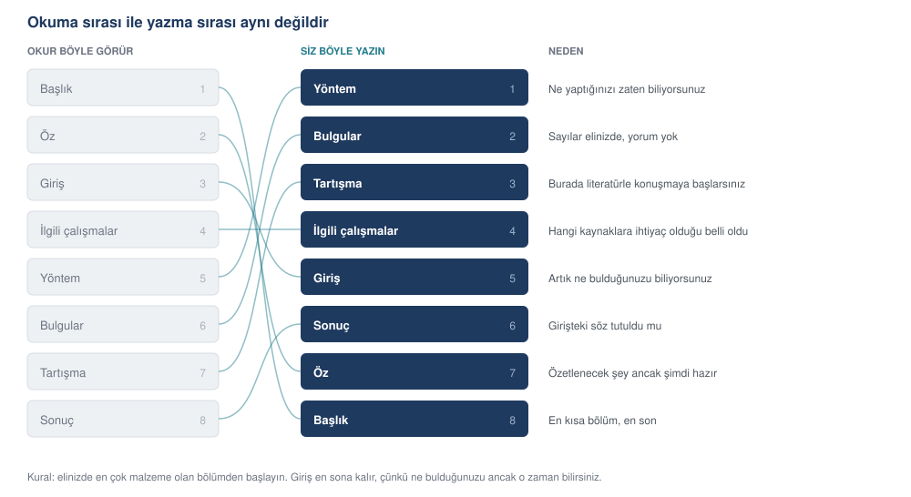

Makaleyi bölüm bölüm yazmak
Hangi bölümün hangi sırayla yazılacağı ve her bölüm için ayrı bir istem. Yöntemden öze, kısıt yazmaktan dergi seçimine.
Makaleyi baştan sona sırayla yazmak, çoğu kişinin denediği ve çoğu kişinin tıkandığı yoldur. Giriş bölümüyle başlarsanız, henüz bulmadığınız bir şeyi tanıtmaya çalışırsınız. Bu bölüm başka bir sıra öneriyor ve her bölüm için ayrı bir istem veriyor.
Yazım sırası



Mantığı basit: elinizde en çok malzeme olan bölümden başlayın.
Yöntem. Ne yaptığınızı zaten biliyorsunuz. Analiz defterinizi ve temizleme günlüğünüzü açıp yazmaya başlayabilirsiniz. En kolay bölüm budur ve yazarken çalışmanın sınırlarını yeniden görürsünüz.
Bulgular. Sayılar elinizde. Yorum yok, yalnız ne bulunduğu. Tablo ve şekilleri burada yerleştirirsiniz.
Tartışma. Bulguların ne anlama geldiği. Burada ilk kez literatürle konuşmaya başlarsınız, dolayısıyla hangi kaynaklara ihtiyacınız olduğu belli olur.
İlgili çalışmalar. Tartışmayı yazarken hangi çalışmalarla konuştuğunuz ortaya çıkmıştır. Şimdi onları düzenli bir bölüme dönüştürürsünüz.
Giriş. Artık çalışmanın ne olduğunu, ne bulduğunu ve literatürde nereye oturduğunu biliyorsunuz. Giriş bunların tanıtımıdır; önce yazılırsa tahmine dayanır.
Sonuç. Girişte verdiğiniz sözün tutulup tutulmadığı. Girişten sonra yazılır ki sözle karşılığı birbirini tutsun.
Öz. Makalenin tamamının özeti. Sondan bir önceki sırada yazılır; özetlenecek şey ancak o zaman hazırdır.
Başlık. En kısa bölüm, en son. Çalışmanın tamamını gördükten sonra en iyi başlığı bulursunuz.
Yöntem bölümü
Yöntem bölümünün ölçütü tek: başka biri bu bölümü okuyup çalışmayı yineleyebilir mi?
ROL Alanında yayın yapan bir araştırmacı olarak makalenin Yöntem bölümünü yazıyorsun. KAYNAK — dört dosya veriyorum 1. Veri setinin künyesi ve betimi 2. Temizleme günlüğü (hangi karar, kaç satır, hangi gerekçe) 3. Analiz çıktısı (hangi test, hangi varsayım denetimi, hangi sonuç) 4. Kullandığım yazılım ve sürümleri GÖREV Yöntem bölümünü yaz. ALT BAŞLIKLAR 1. Araştırma deseni 2. Veri kaynağı ve örneklem 3. Veri hazırlama 4. Ölçme araçları (varsa) 5. Analiz yöntemi 6. Yazılım ve yeniden üretilebilirlik ZORUNLU İÇERİK — Örneklem büyüklüğü ve nasıl elde edildiği — Çıkarılan her kayıt ve gerekçesi (temizleme günlüğünden) — Her analiz için: hangi test, neden seçildi, hangi varsayım denetlendi, nasıl denetlendi — Varsayım sağlanmadıysa ne yapıldı — Yazılım adları ve sürüm numaraları — Rastgelelik varsa kullanılan tohum değeri — Etik kurul onayı (varsa numara ve tarih) ÜSLUP — Resmî akademik Türkçe, geçmiş zaman, edilgen çatı — "Yapılacaktır" değil "yapılmıştır"; bu bölüm olan biteni anlatır SINIRLAR — Verdiğim dosyalarda olmayan hiçbir işlemden söz etme. — Bulgu yazma. Yöntem bölümünde sonuç olmaz. — Yöntemi savunma ya da övme. "Bu yöntem en uygun olanıdır" deme; neden seçildiğini söyle, yeter. — "Literatürde yaygın olarak kullanılan" gibi kaynaksız genellemelerden kaçın. DENETİM Bölümün sonuna şu soruyu yanıtla: bu bölümü okuyan biri, elinde yalnız veri seti ve bu metinle çalışmayı yineleyebilir mi? Eksik kalan bilgi varsa listele.
ROL Eğitim bilimleri alanında yayın yapan bir araştırmacı olarak makalenin Yöntem bölümünü yazıyorsun. Hedef dergi, ölçme ve değerlendirme ağırlıklı bir eğitim dergisi. KAYNAK — dört dosya 1. Veri setinin künyesi ve betimi: Gündüz & Fokoué (2013), Turkiye Student Evaluation, UCI, doi:10.24432/C5S02S. 5.820 değerlendirme, 28 Likert maddesi (1–5), beş ek değişken, eksik hücre yok. 2. Veri hazırlama günlüğü: 04_gazi_veri_hazirla.py çıktısı — hangi madde hangi boyuta atandı, ölçek puanları nasıl hesaplandı, Türkçe madde sözlüğü nasıl eşleştirildi. 3. Analiz çıktısı: sosyal_analiz.txt ve sosyal_analiz.json — on iki blok. Her blokta testin adı, varsayım denetimi, sonuç ve etki büyüklüğü var. 4. Yazılım: Python 3.14; pandas 3.1.0, NumPy 2.5.4, SciPy 1.18.1, statsmodels 0.15.0, scikit-learn 1.9.1, Matplotlib 3.11.2. Rastgelelik içeren adımlarda tohum 20261103. ÇALIŞMANIN SORUSU Ders değerlendirme ölçeğinin iki boyutu birbirinden ayrışıyor mu, ve derse katılım ile algılanan güçlük bu boyutları farklı mı etkiliyor? GÖREV Yöntem bölümünü yaz. ALT BAŞLIKLAR 1. Araştırma deseni 2. Veri kaynağı ve örneklem 3. Veri hazırlama 4. Ölçme aracı 5. Analiz yöntemi 6. Yazılım ve yeniden üretilebilirlik ZORUNLU İÇERİK — Örneklem büyüklüğü ve nasıl elde edildiği — İkincil veri kullanıldığı açıkça belirtilsin; veri setinin özgün toplama yöntemine ilişkin ayrıntılar için kaynağa gönderme yap — Ölçek puanlarının nasıl hesaplandığı — Her analiz için: hangi test, neden seçildi, hangi varsayım denetlendi, nasıl denetlendi — Varsayım sağlanmadıysa ne yapıldı (Welch, Alexander–Govern) — Parametrik olmayan karşılıkların da uygulandığı — Yazılım adları ve sürüm numaraları, tohum değeri BU ÇALIŞMAYA ÖZGÜ — Veri açık erişimli olduğu için etik kurul onayı gerekmedi; bunu bir cümleyle ve gerekçesiyle belirt. Atlanırsa hakem sorar. — n = 5.820 olduğu için normallik testlerinin küçük sapmalarda bile anlamlı çıkacağı ve kararın çarpıklık/basıklık büyüklüğüne dayandırıldığı mutlaka yazılsın. ÜSLUP — Resmî akademik Türkçe, geçmiş zaman, edilgen çatı — "Yapılacaktır" değil "yapılmıştır" SINIRLAR — Verdiğim dosyalarda olmayan hiçbir işlemden söz etme. — Bulgu yazma. — Yöntemi savunma ya da övme. — "Literatürde yaygın olarak kullanılan" gibi kaynaksız genellemelerden kaçın. DENETİM Bölümün sonuna şu soruyu yanıtla: bu bölümü okuyan biri, elinde yalnız veri seti ve bu metinle çalışmayı yineleyebilir mi? Eksik kalan bilgi varsa listele.
2.3. Veri hazırlama
Ham veri setinde 5.820 değerlendirme kaydı bulunmakta olup eksik hücre yer almamaktadır. Yirmi sekiz Likert maddesinin tamamı 1–5 aralığında kodlanmıştır. Maddeler, veri setinin özgün belgelendirmesinde tanımlanan iki boyuta göre gruplanmıştır: dersle ilgili maddeler (Q1–Q12) ve öğretim elemanıyla ilgili maddeler (Q13–Q28). Her katılımcı için bu iki boyutun ölçek puanı ile yirmi sekiz maddenin tamamından bir genel puan, ilgili maddelerin aritmetik ortalaması alınarak hesaplanmıştır.
2.5. Analiz yöntemi
Analizler, çıktı dosyasındaki on iki bloğa karşılık gelen altı aşamada yürütülmüştür. Birinci aşamada betimsel istatistikler hesaplanmış; dağılım biçimi, çarpıklık ve basıklık katsayılarıyla değerlendirilmiştir. Örneklem büyüklüğü nedeniyle normallik testlerinin küçük sapmalarda dahi anlamlı sonuç vereceği göz önünde bulundurularak, dağılım varsayımına ilişkin karar yalnız test sonuçlarına değil, çarpıklık ve basıklık değerlerinin büyüklüğüne de dayandırılmıştır (çarpıklık −0,42 ile −0,18; basıklık −0,75 ile −0,61 aralığındadır).
İkinci aşamada iç tutarlılık Cronbach alfa katsayısıyla hesaplanmış, madde-toplam korelasyonları ve madde çıkarıldığında elde edilecek alfa değerleri raporlanmıştır. Üçüncü aşamada açımlayıcı faktör analizi uygulanmış; uygulanabilirlik Kaiser–Meyer–Olkin ölçütü ve Bartlett küresellik testiyle sınanmıştır. Faktörler temel bileşenler yöntemiyle çıkarılmış, varimax döndürmesi uygulanmıştır.
Dördüncü aşamada grup karşılaştırmaları yapılmıştır. Varyansların eşitliği Levene testiyle denetlenmiş, eşitlik sağlanmadığında bağımsız örneklem t testinde Welch düzeltmesi, tek yönlü varyans analizinde Alexander–Govern düzeltmesi uygulanmıştır. Tüm parametrik testlerin parametrik olmayan karşılıkları (Mann–Whitney U, Kruskal–Wallis H) da uygulanmış ve sonuçlar birlikte raporlanmıştır. Çoklu karşılaştırmalar için Tukey HSD kullanılmıştır. Her test için etki büyüklüğü hesaplanmıştır: Cohen d, eta kare, epsilon kare ve sıra-noktasal korelasyon.
Beşinci aşamada çoklu doğrusal regresyon kurulmuştur. Çok doğrusallık varyans şişirme faktörleriyle (tümü 2,20'nin altında), artık varyansının sabitliği Breusch–Pagan testiyle, artıkların bağımsızlığı Durbin–Watson istatistiğiyle (1,938) denetlenmiştir. Altıncı aşamada ikili sonuç değişkeni için lojistik regresyon uygulanmış, olasılık oranları %95 güven aralıklarıyla raporlanmıştır.
2.6. Yazılım ve yeniden üretilebilirlik
Analizler Python 3.14 ortamında yürütülmüştür. Kullanılan paketler ve sürümleri: pandas 3.1.0, NumPy 2.5.4, SciPy 1.18.1, statsmodels 0.15.0, scikit-learn 1.9.1, Matplotlib 3.11.2. Rastgelelik içeren tüm işlemlerde tohum değeri 20261103 olarak sabitlenmiştir. Analiz betiği ve ham çıktılar ek dosyalarda sunulmuştur.
DENETİM — bu bölümle çalışma yinelenebilir mi?
Yinelenebilir. Veri seti açık erişimlidir, dönüştürme adımları açıklanmıştır, her testin varsayım denetimi belirtilmiştir, yazılım sürümleri ve tohum değeri verilmiştir. Eksik kalan tek bilgi, veri setinin özgün toplama yöntemine ilişkin ayrıntılardır; bu bilgi ikincil veri kullanıldığı için özgün kaynağa atıfla verilmiştir.
Bulgular bölümü
Yöntem ne yaptığınızı, Bulgular ne bulduğunuzu anlatır. Ne anlama geldiği buraya girmez.
Beklendiği gibi, derse katılımı yüksek olan öğrenciler öğretim elemanını daha olumlu değerlendirmiştir. Bu bulgu, katılımın öğrenci memnuniyetini artırdığını göstermektedir.
Derse katılımı yüksek olan öğrencilerin öğretim elemanı değerlendirme puanı (n = 2.098, ort = 3,540, ss = 1,096), katılımı düşük olan öğrencilerinkinden (n = 2.930, ort = 3,032, ss = 1,256) yüksektir; Welch t(4.834) = 15,232, p < 0,001, Cohen d = 0,426.
Soldaki cümlede iki sorun var. "Beklendiği gibi" bir yorumdur; beklentinizin ne olduğu Giriş bölümünde yazılır, burada değil. "Katılımın memnuniyeti artırdığını göstermektedir" ise bir neden sonuç iddiasıdır; kesitsel bir veride bunu söyleyemezsiniz ve zaten Tartışma bölümünün işidir.
ROL Bir dergi makalesinin Bulgular bölümünü yazıyorsun. KAYNAK Ekte analiz çıktısı (metin ve JSON), tablolar ve şekil altyazıları. GÖREV Bulgular bölümünü yaz. YAPI — Alt başlıklar ARAŞTIRMA SORULARINA göre olsun, analiz adımlarına göre değil — Her alt başlıkta önce bulgu cümlesi, sonra destekleyici sayılar, sonra tablo/şekil göndermesi — Tablolar metnin içine gömülmesin; numaralanıp metinden gönderme yapılsın HER SONUÇ İÇİN DÖRT SAYI ZORUNLU test istatistiği · serbestlik derecesi · p değeri · etki büyüklüğü Dördü birden yoksa o cümleyi yazma; eksik olanı bana bildir. SAYI BİÇİMİ — Ondalık ayracı virgül, binlik ayracı nokta — p < 0,001 ise "p < 0,001" yaz, bilimsel gösterim kullanma — Üç ondalık basamak SINIRLAR — Bulguyu YORUMLAMA. "Bu, şunu göstermektedir" cümlesi kurma. — "Beklendiği gibi", "ilginç biçimde", "dikkat çekici olarak" gibi değerlendirme ifadeleri kullanma. — Anlamsız çıkan sonuçları atlama; hepsi raporlanır. — Düşük R kare, düşük AUC gibi zayıf sonuçları yumuşatma. — Çıktıda olmayan hiçbir sayı yazma. DENETİM Bölüm sonunda: kaç istatistiksel sonuç raporlandı, kaçında etki büyüklüğü var? Sayılar eşit değilse hangisinde eksik?
ROL
Bir eğitim bilimleri dergisinin Bulgular bölümünü yazıyorsun.
KAYNAK
sosyal_analiz.txt ve sosyal_analiz.json — on iki analiz bloğu.
Dokuz şekil (s01–s09) ve altyazıları. Dört tablo.
ARAŞTIRMA SORULARI
S1. Ölçeğin iç tutarlılığı ne düzeyde?
S2. Maddeler kaç boyut altında kümeleniyor, bu yapı beklenen iki
boyutla uyuşuyor mu?
S3. Derse katılım, öğretim elemanı değerlendirmesini etkiliyor mu?
S4. Algılanan güçlük, ders değerlendirmesini etkiliyor mu?
S5. Katılım ve güçlük birlikte modellendiğinde her birinin katkısı
ne?
GÖREV
Bulgular bölümünü yaz.
YAPI
— Alt başlıklar ARAŞTIRMA SORULARINA göre (S1–S5), analiz
adımlarına göre değil
— Her alt başlıkta önce bulgu cümlesi, sonra destekleyici sayılar,
sonra tablo/şekil göndermesi
HER SONUÇ İÇİN DÖRT SAYI ZORUNLU
test istatistiği · serbestlik derecesi · p değeri · etki büyüklüğü
SAYI BİÇİMİ
— Ondalık ayracı virgül, binlik ayracı nokta
— p < 0,001 ise "p < 0,001" yaz, bilimsel gösterim kullanma
— Üç ondalık basamak
BU ÇALIŞMAYA ÖZGÜ
— Cronbach alfa 0,992 çıktı. Bunu yalnız olumlu okuma; madde
fazlalığı yorumunu da raporla.
— Güçlük ile ders puanı arasındaki ilişki doğrusal değil, ters U
biçimli. Korelasyon katsayısı sıfıra yakın (r = 0,060) ama ANOVA
anlamlı. İkisini birlikte, çelişki gibi sunmadan yaz.
— Regresyonda güçlük anlamsızlaşıyor (p = 0,522). Bunu raporla;
nedenini Tartışma'ya bırak.
— R kare = 0,053. Düşük olduğu için gizleme ya da yumuşatma.
SINIRLAR
— Bulguyu YORUMLAMA. "Bu, şunu göstermektedir" cümlesi kurma.
— "Beklendiği gibi", "ilginç biçimde" gibi değerlendirme ifadeleri
kullanma.
— Anlamsız çıkan sonuçları atlama.
— Çıktıda olmayan hiçbir sayı yazma.
DENETİM
Bölüm sonunda: kaç istatistiksel sonuç raporlandı, kaçında etki
büyüklüğü var? Sayılar eşit değilse hangisinde eksik?Tartışma bölümü
Tartışma, bulguyu üç şeye bağlar: literatüre, sınırlara ve sonraki adıma. En çok hata yapılan bölümdür, çünkü burada yazarın söylemek istediği ile verinin söylediği ayrışır.
Yaygın hata 1
Bulguyu abartmak
"Modelimiz %97 başarı göstermiştir, bu da kimlik avı tespitinde yeni bir çığır açmaktadır." İkinci cümlenin dayanağı yok. Bir ölçüm değeri, alanın dönüştüğünün kanıtı değildir.
Yaygın hata 2
Kendini gereksiz yere savunmak
"Çalışmanın en büyük kısıtı örneklemin tek bir kurumdan gelmesidir ve bu nedenle bulgular genellenemez; ayrıca kesitsel desen nedensellik kurmaya izin vermemektedir; ayrıca..." Kısıtlar bir kez, kendi bölümünde, sade yazılır. Her paragrafta yinelenen özür, güven vermez.
ROL Alanında deneyimli bir araştırmacı olarak Tartışma bölümünü yazıyorsun. KAYNAK — üç dosya 1. Bulgular bölümünün tam metni 2. Sentez matrisi (literatürdeki çalışmalar ve bulguları) 3. Çalışmanın yöntem özeti GÖREV Tartışma bölümünü yaz. YAPI — beş parça 1. Ana bulguların özeti (en çok bir paragraf, sayı tekrarlamadan) 2. Her ana bulgunun literatürle ilişkisi: destekliyor mu, çelişiyor mu, genişletiyor mu? Her iddiaya sentez matrisinden atıf. 3. Beklenmedik ya da olumsuz bulguların açıklanması 4. Kısıtlar 5. Sonraki araştırma için somut öneriler KISITLAR BÖLÜMÜ İÇİN ÖZEL KURALLAR — En çok dört kısıt yaz. Daha fazlası okuru yorar ve çalışmanın değerini gölgeler. — Her kısıt için: ne olduğu, bulguyu nasıl etkilediği, ne yapılabileceği. — Kapsamı olumlu kur. "Yalnızca X yapılmıştır" yerine "X üzerinde ölçülmüştür" yaz. — Dramatize etme. "En büyük kısıt", "ciddi bir sınırlılık", "bu nedenle çalışma yalnızca keşfedicidir" gibi kendini mahkûm eden ifadeler kullanma. — Kısıtları yalnız bu bölümde yaz; özete, girişe ve sonuca serpiştirme. SINIRLAR — Bulgularda olmayan bir sonuçtan söz etme. — Kesitsel veriden nedensellik çıkarma. — Sentez matrisinde olmayan hiçbir çalışmaya atıf yapma. — Çalışmayı övme. "Önemli bir katkı sunmaktadır" gibi cümleler kurma; katkının ne olduğunu söyle, değerini okur takdir eder. — "Gelecek çalışmalar bu konuyu daha derinlemesine incelemelidir" gibi içi boş öneriler yazma. Öneri somut olsun: hangi veri, hangi yöntem, hangi soru. DENETİM Sonunda: kaç kısıt yazıldı, kaçı somut bir öneriyle eşleştirildi? Metinde kaç atıf var, hepsi sentez matrisinde mi?
ROL Eğitim bilimleri alanında deneyimli bir araştırmacı olarak Tartışma bölümünü yazıyorsun. KAYNAK — üç dosya 1. Bulgular bölümünün tam metni 2. Sentez matrisi: ders değerlendirme ölçeklerinin yapı geçerliği üzerine 31 çalışma, yedi sütun 3. Yöntem özeti GÖREV Tartışma bölümünü yaz. YAPI — beş parça 1. Ana bulguların özeti (en çok bir paragraf, sayı tekrarlamadan) 2. Her ana bulgunun literatürle ilişkisi 3. Beklenmedik bulguların açıklanması 4. Kısıtlar 5. Sonraki araştırma için somut öneriler BU ÇALIŞMADA AÇIKLANMASI GEREKEN ÜÇ ŞEY — İki faktör ayrıştı ama çapraz yükler yüksek. Bunu nasıl yorumlamalı: ayrı yapılar mı, yoksa tek bir genel izlenimin iki görünümü mü? — Güçlük ile ders puanı arasındaki ters U ilişkisi. Çok kolay ve çok güç dersler neden benzer puan alıyor? — Güçlüğün regresyonda anlamsızlaşması. Doğrusal modelin ters U biçimli ilişkiyi yakalayamadığını ve güçlük ile ders puanı arasındaki doğrusal ilişkinin sıfıra yakın olduğunu (r = 0,060) öne al; katılımla olan orta düzeyli ilişkiyi (r = 0,437) ikincil etken olarak ele al. KISITLAR BÖLÜMÜ İÇİN ÖZEL KURALLAR — En çok dört kısıt yaz. — Her kısıt için: ne olduğu, bulguyu nasıl etkilediği, ne yapılabileceği. — Kapsamı olumlu kur. "Yalnızca üç öğretim elemanının dersleri incelenmiştir" yerine "bulgular üç öğretim elemanının on üç dersi ve 5.820 değerlendirme üzerinde elde edilmiştir". — Dramatize etme. — Kısıtları yalnız bu bölümde yaz. SINIRLAR — Bulgularda olmayan bir sonuçtan söz etme. — Kesitsel veriden nedensellik çıkarma. Katılım ile puan arasındaki ilişki iki yönlü olabilir: iyi hoca derse devamı artırıyor da olabilir. — Sentez matrisinde olmayan hiçbir çalışmaya atıf yapma. — Çalışmayı övme. — "Gelecek çalışmalar bu konuyu daha derinlemesine incelemelidir" gibi içi boş öneriler yazma. DENETİM Sonunda: kaç kısıt yazıldı, kaçı somut bir öneriyle eşleştirildi? Metinde kaç atıf var, hepsi sentez matrisinde mi?
Giriş bölümü
Giriş, okuru "bu makaleyi neden okumalıyım" sorusundan "bunu okumak istiyorum" noktasına taşır. Standart bir yapısı vardır ve bu yapı işe yarar.
Alanı kurun. Konunun neden önemli olduğu. Bir ya da iki paragraf, kaynaklı. Burada abartı gerekmez; alan zaten önemliyse okur bilir.
Boşluğu gösterin. Şu ana kadar ne yapıldı ve ne yapılmadı. Boşluk iddiası bir sayıyla desteklenmeli: "incelenen 22 çalışmanın yalnız üçü çapraz doğrulama raporlamıştır" gibi.
Boşluğu doldurma sözünü verin. Bu çalışma ne yapıyor. Tek paragraf, net.
Katkıyı sayın. Maddeler hâlinde, abartısız. "İlk kez" demeden önce iki kez düşünün; taramanız bunu destekliyor mu?
Yol haritası verin. Makalenin kalanında ne var. Kısa dergilerde atlanabilir.
ROL Bir dergi makalesinin Giriş bölümünü yazıyorsun. KAYNAK — dört dosya 1. Bulgular bölümü (tamamlanmış) 2. Tartışma bölümü (tamamlanmış) 3. İlgili çalışmalar bölümü (tamamlanmış) 4. Boşluk analizi GÖREV Giriş bölümünü yaz. 700–900 kelime. YAPI 1. Alanın önemi ve bağlam (1–2 paragraf) 2. Mevcut durumun özeti ve boşluk (2 paragraf) 3. Bu çalışmanın yanıt aradığı soru (1 paragraf) 4. Katkılar (maddeler hâlinde, 3–5 madde) 5. Makalenin yapısı (1 kısa paragraf) BOŞLUK CÜMLESİ İÇİN KURAL Boşluk iddiası sayıyla desteklenmeli. "Literatürde yeterince çalışılmamıştır" yazma. Bunun yerine: "İncelenen [n] çalışmanın yalnız [k] tanesi [X] raporlamaktadır" biçiminde yaz. SINIRLAR — Bulgular bölümünde olmayan bir sonuçtan söz etme. — Sentez matrisinde olmayan çalışmaya atıf yapma. — "İlk kez" iddiasını, boşluk analizi açıkça desteklemiyorsa yazma. — Abartılı sıfatlardan kaçın: "çığır açan", "devrim niteliğinde", "son derece kritik". — Kısıtlardan söz etme; kısıtlar Tartışma bölümünde. — Retorik soruyla paragraf başlatma. DENETİM Sonunda üç soruyu yanıtla: 1. Boşluk iddiası bir sayıyla desteklendi mi? Hangi sayı? 2. Sayılan katkıların her biri Bulgular bölümünde karşılığını buluyor mu? Tek tek eşleştir. 3. "İlk kez" ya da benzeri bir öncelik iddiası var mı? Varsa dayanağı ne?
ROL Bir eğitim bilimleri dergisinin Giriş bölümünü yazıyorsun. KAYNAK — dört dosya 1. Bulgular bölümü (tamamlanmış) 2. Tartışma bölümü (tamamlanmış) 3. İlgili çalışmalar bölümü (tamamlanmış) 4. Boşluk analizi: 31 çalışmanın yalnız yedisi iki boyutun ayrışmasını istatistiksel olarak sınamış; bu yedisinin dördü örneklem büyüklüğünü 500'ün altında tutmuş. GÖREV Giriş bölümünü yaz. 700–900 kelime. YAPI 1. Alanın önemi ve bağlam (1–2 paragraf): ders değerlendirmeleri akademik atama ve yükseltmelerde kullanılıyor; neyi ölçtüğü doğrudan sonuç doğuruyor 2. Mevcut durumun özeti ve boşluk (2 paragraf) 3. Bu çalışmanın yanıt aradığı soru (1 paragraf) 4. Katkılar (maddeler hâlinde, 3–5 madde) 5. Makalenin yapısı (1 kısa paragraf) BOŞLUK CÜMLESİ İÇİN KURAL Boşluk iddiası sayıyla desteklenmeli. Elindeki sayı şu: 31 çalışmanın yalnız yedisi yapı ayrışmasını sınamış, dördü n < 500 ile. Bu sayıları kullan. SINIRLAR — Bulgular bölümünde olmayan bir sonuçtan söz etme. — Sentez matrisinde olmayan çalışmaya atıf yapma. — "İlk kez" iddiasını yazma; boşluk analizi bunu desteklemiyor, yalnız örneklem büyüklüğü avantajı var. — Abartılı sıfatlardan kaçın. — Kısıtlardan söz etme; kısıtlar Tartışma'da. — Retorik soruyla paragraf başlatma. DENETİM Sonunda üç soruyu yanıtla: 1. Boşluk iddiası bir sayıyla desteklendi mi? Hangi sayı? 2. Sayılan katkıların her biri Bulgular bölümünde karşılığını buluyor mu? Tek tek eşleştir. 3. "İlk kez" ya da benzeri bir öncelik iddiası var mı?
Öz ve başlık
ROL Bir dergi makalesinin özünü yazıyorsun. KAYNAK Makalenin tamamlanmış hâli (ekte). GÖREV Yapılandırılmış öz yaz. YAPI — beş cümle grubu, toplam 200–250 kelime 1. Bağlam ve problem (1–2 cümle) 2. Amaç (1 cümle) 3. Yöntem: veri, örneklem büyüklüğü, analiz (2–3 cümle) 4. Bulgular: en önemli iki ya da üç sonuç, SAYILARLA (3–4 cümle) 5. Sonuç ve katkı (1–2 cümle) ZORUNLU — Bulgular bölümünde en az bir sayı geçsin (etki büyüklüğü ya da ana ölçüm değeri) — Örneklem büyüklüğü yazsın — Kullanılan ana yöntem adıyla geçsin SINIRLAR — Özde atıf olmaz. — Kısaltma ilk geçtiğinde açılsın; öz tek başına okunur. — Makalede olmayan hiçbir bulgu ya da sayı yazma. — "Bu çalışmada incelenmiştir" gibi içi boş amaç cümleleri kurma; neyin incelendiğini söyle. — Kısıtlardan söz etme; öz dar bir alandır, kısıt Tartışma'da. AYRICA Özün altına 5–7 anahtar kelime öner. Her biri için şunu belirt: bu terim [alan sözlüğünde var / yalnız bu çalışmada kullanılıyor]. Sözlükte olan terimler aramada bulunmayı kolaylaştırır. DENETİM Kelime sayısını yaz. 250'yi aşıyorsa hangi cümlenin kısaltılabileceğini belirt.
ROL Bir eğitim bilimleri dergisinin özünü yazıyorsun. Dergi yapılandırılmış öz istemiyor; tek paragraf, 250 kelime sınırı. KAYNAK Makalenin tamamlanmış hâli (ekte). GÖREV Öz yaz. YAPI — beş cümle grubu, toplam 200–250 kelime 1. Bağlam ve problem (1–2 cümle) 2. Amaç (1 cümle) 3. Yöntem: veri, örneklem büyüklüğü, analiz (2–3 cümle) 4. Bulgular: en önemli üç sonuç, SAYILARLA (3–4 cümle) 5. Sonuç ve katkı (1–2 cümle) ZORUNLU — Örneklem büyüklüğü (5.820) geçsin — En az üç sayı geçsin: alfa değeri, açıklanan varyans, bir etki büyüklüğü — Kullanılan ana yöntemler adıyla geçsin: açımlayıcı faktör analizi, çoklu regresyon — Verinin ikincil ve açık erişimli olduğu belirtilsin SINIRLAR — Özde atıf olmaz. — Kısaltma ilk geçtiğinde açılsın. — Makalede olmayan hiçbir bulgu ya da sayı yazma. — "Bu çalışmada incelenmiştir" gibi içi boş amaç cümleleri kurma. — Kısıtlardan söz etme. — Düşük R kare'yi gizleme; raporlanacaksa olduğu gibi yaz. AYRICA Özün altına 5–7 anahtar kelime öner. Her biri için şunu belirt: bu terim [ERIC Thesaurus'ta var / yalnız bu çalışmada kullanılıyor]. DENETİM Kelime sayısını yaz. 250'yi aşıyorsa hangi cümlenin kısaltılabileceğini belirt.
KAYNAK Makalenin özü ve bulgular bölümü (ekte). GÖREV Altı başlık seçeneği üret; üç farklı türden ikişer tane olsun: — İki tanesi BETİMLEYİCİ: ne yapıldığını söyler — İki tanesi BULGU İÇEREN: ne bulunduğunu söyler — İki tanesi SORU biçiminde HER BAŞLIK İÇİN — Başlığın kendisi — Kelime sayısı — Hangi anahtar terimleri taşıyor (aramada bulunabilirlik için) — Güçlü yanı, tek cümle — Zayıf yanı, tek cümle SINIRLAR — On iki kelimeyi aşan başlık önerme. — İki noktadan sonra alt başlık eklemeyi alışkanlık hâline getirme; en çok iki seçenekte kullan. — Makalenin desteklemediği bir iddia taşıyan başlık yazma. — "Yeni bir yaklaşım", "kapsamlı bir inceleme" gibi içi boş nitelemelerden kaçın. DENETİM Altı başlığı, aramada bulunabilirlik açısından sırala ve gerekçesini yaz. En çok aranacak terimi taşıyan hangisi?
KAYNAK Makalenin özü ve bulgular bölümü (ekte). ÇALIŞMANIN ÖZÜ 5.820 ders değerlendirmesinde ölçeğin iki boyutunun (ders ve öğretim elemanı) ayrışıp ayrışmadığı sınandı. İki faktör ayrıştı (28/28 madde beklenen boyuta yüklendi, açıklanan varyans %86,8) ama çapraz yükler yüksek. Derse katılım her iki boyutu da etkiliyor; algılanan güçlük, katılım denetlendiğinde anlamsızlaşıyor. GÖREV Altı başlık seçeneği üret; üç farklı türden ikişer tane olsun: — İkisi BETİMLEYİCİ: ne yapıldığını söyler — İkisi BULGU İÇEREN: ne bulunduğunu söyler — İkisi SORU biçiminde HER BAŞLIK İÇİN — Başlığın kendisi — Kelime sayısı — Hangi anahtar terimleri taşıyor (aramada bulunabilirlik için) — Güçlü yanı, tek cümle — Zayıf yanı, tek cümle SINIRLAR — On iki kelimeyi aşan başlık önerme. — İki noktadan sonra alt başlık eklemeyi en çok iki seçenekte kullan. — Makalenin desteklemediği bir iddia taşıyan başlık yazma. Özellikle: iki boyut ayrıştı ama çapraz yükler yüksek; "iki boyut birbirinden bağımsızdır" diyen bir başlık yanlış olur. — "Yeni bir yaklaşım", "kapsamlı bir inceleme" gibi içi boş nitelemelerden kaçın. — Türkçe başlık üret; altına İngilizce karşılığını da yaz. DENETİM Altı başlığı, aramada bulunabilirlik açısından sırala ve gerekçesini yaz. "Ders değerlendirme" ve "yapı geçerliği" terimlerini kaç başlık taşıyor?
Aynı çalışmadan bildiri posteri
Poster, makalenin kısaltılmış hâli değildir. Makale okunur, poster uzaktan taranır. Ziyaretçi üç metreden başlığı, bir metreden şekilleri, ancak ilgisini çekerse yakından metni okur. Bu yüzden posterin ilk işi, bulguyu başlıkta söylemektir.
Çay posasından elde edilen aktif karbonun boyar madde giderimi üzerine bir çalışma
Çay posası aktif karbonu yüksek pH'ta ticari kömüre yaklaşıyor: malzeme ile pH arasında etkileşim var
Soldaki başlık konuyu söylüyor, sağdaki bulguyu. Koridordan geçen biri soldakinden hiçbir şey öğrenmez; sağdakinden çalışmanın sonucunu öğrenir ve durmaya karar verebilir.
ROL Bilimsel poster tasarımı yapan bir araştırma iletişimi uzmanısın. Posterin okunma biçimini biliyorsun: üç metreden başlık, bir metreden şekil, yakından metin. BAĞLAM — EKTE VERİLEN DOSYALAR 1. Analiz çıktısı: [dosya adı] — bütün sayılar buradan alınacak 2. Hazır şekiller: [şekil dosyalarının adları ve her birinin ne gösterdiği] 3. [Varsa] makalenin taslağı ya da genişletilmiş özeti 4. Konferansın poster ölçüsü ve varsa şablon kuralları: [ölçü] ÇALIŞMA [Çalışmanın iki cümlelik özeti: ne yapıldı, ne bulundu] GÖREV Posterin içeriğini ve yerleşim planını üret. ÖNCE BAŞLIK Üç başlık önerisi yaz. Her biri BULGUYU söylesin, konuyu değil. En fazla iki satır, üç metreden okunabilecek uzunlukta. Hangisini neden önerdiğini tek cümleyle açıkla. SONRA YERLEŞİM Üç sütunluk bir düzen kur. Her kutu için şunları ver: — Kutu başlığı ve sıra numarası — İçerik: madde madde, poster diliyle yazılmış (tam cümle şart değil) — Varsa hangi şekil bu kutuya girecek — Kutunun hangi sütunda ve hangi sırada olacağı İÇERİK KURALLARI — Her kutu tek bir iş yapsın. İki konu anlatan kutu bölünsün. — Hiçbir kutuda altı maddeden fazla olmasın. — Sayılar ek dosyadan alınsın; yuvarlama yapılacaksa belirtilsin. — Yöntem kutusu tasarımı versin, protokolü değil. — Sonuçlar numaralı maddeler hâlinde, en çarpıcı olan başta. — Sınırlılık kutusu olsun ve tek bir sınırı iyi anlatsın; liste olmasın. ZORUNLU KUTULAR — Veri ve yapay zekâ beyanı: veri gerçek mi sentetik mi, hangi aşamada hangi araç kullanıldı — Kaynaklar: en fazla beş, yalnız posterde adı geçenler — İletişim ya da kodun bulunabileceği yer SINIRLAR — Ek dosyalarda olmayan sayı üretme. Eksikse "[bu sayı verilmedi]" yaz. — Şekil uydurma; yalnız listede verilen şekilleri yerleştir. — Poster metnini makale paragrafı gibi yazma. Uzun cümle kurma. — "Gelecek çalışmalarda incelenecektir" gibi içi boş kapanış yazma; sonraki adımı somut yaz. DENETİM Planın sonunda şunu listele: her sütunun kaç kutusu var, hangi şekil nerede, posterde geçen her sayının ek dosyadaki karşılığı hangi satır.
ROL Bilimsel poster tasarımı yapan bir araştırma iletişimi uzmanısın. Posterin okunma biçimini biliyorsun: üç metreden başlık, bir metreden şekil, yakından metin. BAĞLAM — EKTE VERİLEN DOSYALAR 1. Analiz çıktısı: cikti/adsorpsiyon_analiz.json — bütün sayılar buradan alınacak. İçinde ANOVA tablosu, Tukey karşılaştırmaları, izoterm parametreleri ve güven aralıkları, duyarlılık analizi var. 2. Hazır şekiller: — k01_temizleme.svg: yedi temizleme adımının kaç satırı etkilediği — k02_anova_kiyas.svg: eksik ve bloklanmış modelin F değerleri — k03_etkilesim.svg: pH düzeyine göre iki adsorbanın kapasitesi — k04_izoterm.svg: Langmuir ve Freundlich uyumu, iki panel 3. Konferans poster ölçüsü: A0 dikey (841 × 1189 mm) ÇALIŞMA Çay fabrikası atığından elde edilen aktif karbonun katyonik boyar madde giderimini, ticari aktif karbonla karşılaştırmalı olarak tam faktöriyel kesikli deneyle ölçtük. Ticari kömür genel olarak daha iyi, ama üstünlüğü pH'a bağlı: pH 3'te fark yok denecek kadar az, pH 10'da belirginleşiyor. GÖREV Posterin içeriğini ve yerleşim planını üret. ÖNCE BAŞLIK Üç başlık önerisi yaz. Her biri BULGUYU söylesin, konuyu değil. En fazla iki satır, üç metreden okunabilecek uzunlukta. Hangisini neden önerdiğini tek cümleyle açıkla. SONRA YERLEŞİM Üç sütunluk bir düzen kur. Her kutu için şunları ver: — Kutu başlığı ve sıra numarası — İçerik: madde madde, poster diliyle yazılmış — Varsa hangi şekil bu kutuya girecek — Kutunun hangi sütunda ve hangi sırada olacağı İÇERİK KURALLARI — Her kutu tek bir iş yapsın. — Hiçbir kutuda altı maddeden fazla olmasın. — Sayılar ek dosyadan alınsın; yuvarlama yapılacaksa belirtilsin. — Yöntem kutusu tasarımı versin, protokolü değil. — Sonuçlar numaralı maddeler hâlinde, en çarpıcı olan başta. — Sınırlılık kutusu olsun ve tek bir sınırı iyi anlatsın. BU ÇALIŞMAYA ÖZGÜ — Analizin "Adım 0" bölümü, derişim ve süre modele konmadığında bütün etkilerin kaybolduğunu gösteriyor. Bu bir yöntem dersi; postere ayrı bir kutu olarak koy ve k02 şeklini oraya yerleştir. — Çay posasının qmax güven aralığı çok geniş ve gerçek değeri kapsamıyor. Sınırlılık kutusu bunu anlatsın; nedenini de söylesin. — Veri sentetiktir. Bunu hem başlık bandında hem beyan kutusunda belirt; okur posterin önünden sayı alıp gitmesin. ZORUNLU KUTULAR — Veri ve yapay zekâ beyanı — Kaynaklar: en fazla beş — Kodun ve verinin bulunabileceği yer SINIRLAR — Ek dosyalarda olmayan sayı üretme. — Şekil uydurma; yalnız listedeki dört şekli yerleştir. — Poster metnini makale paragrafı gibi yazma. — "Gelecek çalışmalarda incelenecektir" yazma; sonraki adımı somut yaz — hangi derişim aralığı, neden. DENETİM Planın sonunda şunu listele: her sütunun kaç kutusu var, hangi şekil nerede, posterde geçen her sayının analiz çıktısındaki karşılığı.
- Boyut
- A0 dikey · 841 × 1189 mm · dört gömülü şekil
- Pakette
- p01_poster.svg · p01_poster.png · 18_poster.py · adsorpsiyon_analiz.json

Posteri çizen betik ve beslendiği analiz çıktısı. python 18_poster.py
cikti/adsorpsiyon_analiz.json varlik/sekil komutu posteri yeniden
üretir; sayılar her koşuda analiz çıktısından okunur.

cikti/adsorpsiyon_analiz.json dosyasından
okunarak yerleştirildi; hiçbiri elle yazılmadı. Çizen betik:
kod/18_poster.py
Dosya: p01_poster.svg
· PNG sürümüDil ve insanlaştırma
Yapay zekâ yardımıyla yazılmış metinlerin bazı ortak izleri vardır. Bunlar yanlışlık değil, tekdüzeliktir — ve deneyimli bir okur fark eder.
Sık görülen izler
Nelere bakılır
Her paragrafın sonuna konan özet cümlesi. Üçlü listeler ("hızlı, güvenilir ve ölçeklenebilir"). "Sadece ... değil, aynı zamanda ..." kalıbının sık yinelenmesi. Gereğinden çok uzun tire. Abartılı nitelemeler. Her bölümün aynı uzunlukta olması. Hiç kullanılmayan devrik cümle.
İnsan metninde olan
Neler eksik kalır
Düzensiz paragraf uzunlukları. Ara sıra çok kısa cümleler. Bir fikrin iki paragrafta anlatılması, başka bir fikrin yarım cümlede geçilmesi. Kişisel bir örnek. Belirli bir yöntem tercihine duyulan şüphenin dile getirilmesi.
GÖREV
Aşağıdaki metni, yapay zekâ yardımıyla yazılmış metinlerin tipik
izleri açısından denetle.
ARANACAK İZLER
1. Her paragrafın sonuna konan özetleyici cümle
2. Üçlü liste kalıbı ("x, y ve z")
3. "Sadece ... değil, aynı zamanda ..." yapısı
4. Gereğinden çok uzun tire kullanımı
5. Abartılı niteleme sıfatları
6. Şişkin fiiller: "ele almaktadır", "önemli bir rol oynamaktadır",
"beraberinde getirmektedir"
7. Soyut adlaştırma: "kullanımının sağlanması" yerine "kullanmak"
8. Paragraf uzunluklarının tekdüzeliği
9. Retorik soruyla paragraf açma
ÇIKTI
| # | İz türü | Şu anki cümle | Önerilen hâli |
SINIRLAR
— Metni baştan yazma. Yalnız işaretle ve nokta atışı öneri ver.
— Teknik terimi sadeleştirmeyi önerme; terim gerekliyse kalır.
— Anlamı değiştirme. Her öneri, özgün cümleyle aynı şeyi
söylemelidir.
— Sayı, künye ve istatistiksel ifadelere dokunma.
— Metin zaten doğal akıyorsa "değişiklik gerekmiyor" yaz. Sorun
üretme.
DENETİM
Sonunda: kaç iz bulundu, bunların kaçı ciddi (okur fark eder),
kaçı küçük (fark edilmez)?GÖREV
Aşağıdaki metni, yapay zekâ yardımıyla yazılmış metinlerin tipik
izleri açısından denetle.
METİN
[makalenizin Tartışma bölümünü buraya yapıştırın — bu örnekte
1.400 kelimelik bir Tartışma bölümü]
ARANACAK İZLER
1. Her paragrafın sonuna konan özetleyici cümle
2. Üçlü liste kalıbı ("x, y ve z")
3. "Sadece ... değil, aynı zamanda ..." yapısı
4. Gereğinden çok uzun tire kullanımı
5. Abartılı niteleme sıfatları
6. Şişkin fiiller: "ele almaktadır", "önemli bir rol oynamaktadır",
"beraberinde getirmektedir"
7. Soyut adlaştırma: "kullanımının sağlanması" yerine "kullanmak"
8. Paragraf uzunluklarının tekdüzeliği
9. Retorik soruyla paragraf açma
BU METNE ÖZGÜ EK KONTROL
10. Nedensel dil kaçağı: kesitsel veriden nedensellik çıkaran
cümleler. "Katılım puanı artırmaktadır" gibi. Bunları ayrı
işaretle; bu bir üslup sorunu değil, yöntem hatasıdır.
11. Kısıt tekrarı: kısıtlar Tartışma'nın kendi bölümünde bir kez
yazılmalı. Başka paragraflara sızmış özür cümlesi var mı?
ÇIKTI
| # | İz türü | Şu anki cümle | Önerilen hâli |
Nedensel dil kaçaklarını tablonun başına koy; ötekilerden önce
gelsinler.
SINIRLAR
— Metni baştan yazma. Yalnız işaretle ve nokta atışı öneri ver.
— Teknik terimi sadeleştirmeyi önerme.
— Anlamı değiştirme.
— Sayı, künye ve istatistiksel ifadelere dokunma.
— Metin zaten doğal akıyorsa "değişiklik gerekmiyor" yaz. Sorun
üretme.
DENETİM
Sonunda: kaç iz bulundu, bunların kaçı ciddi (okur fark eder),
kaçı küçük? Nedensel dil kaçağı kaç tane?Dergi seçimi ve gönderim
ROL Yayın danışmanısın. Bir makale için dergi uygunluğu değerlendiriyorsun. KAYNAK 1. Makalenin özü ve anahtar kelimeleri 2. Aday dergilerin listesi: her biri için ad, kapsam metni, kabul oranı (biliniyorsa), ortalama değerlendirme süresi, açık erişim ücreti, dizin bilgisi GÖREV Her dergi için uygunluk değerlendirmesi yap. HER DERGİ İÇİN | Ölçüt | Değerlendirme | |---|---| | Kapsam uyumu | Yüksek / Orta / Düşük + tek cümle gerekçe | | Yöntem uyumu | Bu dergi bu tür yöntem kullanan çalışma yayımlıyor mu | | Okur kitlesi | Makalenin hedef okuruyla örtüşüyor mu | | Süre | Değerlendirme süresi benim takvimime uyuyor mu | | Maliyet | Açık erişim ücreti ve kurum anlaşması durumu | | Risk | Editörün makaleyi hakeme hiç göndermeden reddetmesi (masa başı reddi) riski nelerden kaynaklanabilir | SONUÇ Dergileri sırala. Birinci ve ikinci tercihi gerekçelendir. SINIRLAR — Verdiğim liste dışında dergi önerme. — Kabul oranı, etki faktörü gibi sayıları uydurma; vermediğim bilgiyi "bilinmiyor" diye işaretle. — Bir derginin yağmacı (predatory) olup olmadığı konusunda kesin hüküm verme; şüphe varsa hangi işaretlerin denetlenmesi gerektiğini söyle. DENETİM Her dergi için kaç ölçütte "bilinmiyor" yazdın? Bu bilgileri nereden bulabileceğimi söyle.
ROL
Yayın danışmanısın. Bir makale için dergi uygunluğu
değerlendiriyorsun.
KAYNAK
1. Makalenin özü ve anahtar kelimeleri (ekte)
2. Aday dergiler — her biri için kapsam metnini, bilinen
değerlendirme süresini, açık erişim ücretini ve dizin bilgisini
ekliyorum:
— Dergi A: eğitim ölçme ve değerlendirme, SSCI, ücretsiz,
ortalama 5 ay
— Dergi B: yükseköğretim araştırmaları, SSCI, 2.400 $ açık
erişim, ortalama 3 ay
— Dergi C: Türkçe yayın yapan ulusal eğitim dergisi, TR Dizin,
ücretsiz, ortalama 4 ay
— Dergi D: psikometri ve ölçek geliştirme, SSCI Q1, 3.100 $,
ortalama 7 ay
DURUMUM
Üniversitemin Dergi B ile okuma anlaşması var ama yayın ücreti
anlaşması yok. Atama kriterlerim için SSCI gerekiyor. Elimdeki
takvim: altı ay içinde kabul almam gerekiyor.
GÖREV
Her dergi için uygunluk değerlendirmesi yap.
HER DERGİ İÇİN
| Ölçüt | Değerlendirme |
|---|---|
| Kapsam uyumu | Yüksek / Orta / Düşük + tek cümle gerekçe |
| Yöntem uyumu | Bu dergi ikincil veri analizi yayımlıyor mu |
| Okur kitlesi | Makalenin hedef okuruyla örtüşüyor mu |
| Süre | Altı aylık takvimime uyuyor mu |
| Maliyet | Ücret ve kurum anlaşması durumu |
| Risk | Bu dergide masa başı reddi riski neden kaynaklanabilir |
SONUÇ
Dergileri sırala. Birinci ve ikinci tercihi gerekçelendir.
BU DURUMA ÖZGÜ
— İkincil veri analizi bazı dergilerde "özgün veri toplanmamış"
gerekçesiyle masa başı reddi alıyor. Her dergi için bu riski ayrı
değerlendir.
— Dergi D en prestijli ama süre takvimime uymuyor olabilir; bunu
açıkça tart.
SINIRLAR
— Verdiğim liste dışında dergi önerme.
— Kabul oranı, etki faktörü gibi sayıları uydurma; vermediğim
bilgiyi "bilinmiyor" diye işaretle.
— Bir derginin yağmacı olup olmadığı konusunda kesin hüküm verme.
DENETİM
Her dergi için kaç ölçütte "bilinmiyor" yazdın? Bu bilgileri
nereden bulabileceğimi söyle.Bu bölümden alınacaklar
Makale okunduğu sırayla yazılmaz. Yöntem ve Bulgular'dan başlayın; Giriş'i, Tartışma ve İlgili çalışmalar bittikten sonra yazın.
Yöntem bölümünün ölçütü tek: başka biri bunu okuyup çalışmayı yineleyebilir mi?
Bulgular bölümünde yorum olmaz. "Beklendiği gibi" bir yorumdur.
Kısıtlar bir kez, kendi bölümünde, en çok dört madde, kapsamı olumlu kurarak yazılır. Her paragrafta yinelenen özür güven vermez.
Boşluk iddiası sayıyla desteklenir. "Yeterince çalışılmamıştır" cümlesi dayanaksızdır.
Yapay zekâ izlerini temizlemek, saptama aracının puanını düşürmek için değil, metni okunur kılmak içindir.
Akademide Üretken Yapay Zekâ — uygulamalı kurs. Hazırlayan: Dr. Mehmet Sevri, Recep Tayyip Erdoğan Üniversitesi. Bu sayfadaki bütün sayısal çıktılar, yanındaki kod ve veri dosyalarıyla yerel olarak üretilmiştir; hiçbiri elle yazılmamıştır.
Kullanılan gerçek veri setleri CC BY 4.0 ile dağıtılmaktadır ve kaynakları ilgili bölümde künyeleriyle verilmiştir. Sentetik veri kullanılan yerler açıkça işaretlenmiştir.
Buradaki istemler ve çıktılar öğretim malzemesidir. Yapay zekâ araçlarının kullanımından doğan hatalardan, uydurma kaynaklardan ve bunların yer aldığı çalışmalardan kurs ve hazırlayanı sorumlu tutulamaz; sorumluluk aracı kullanan araştırmacıya aittir. Sorumluluk ve etik beyanı · Dr. Mehmet Sevri — kişisel sayfa